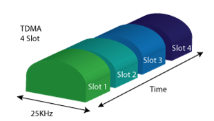
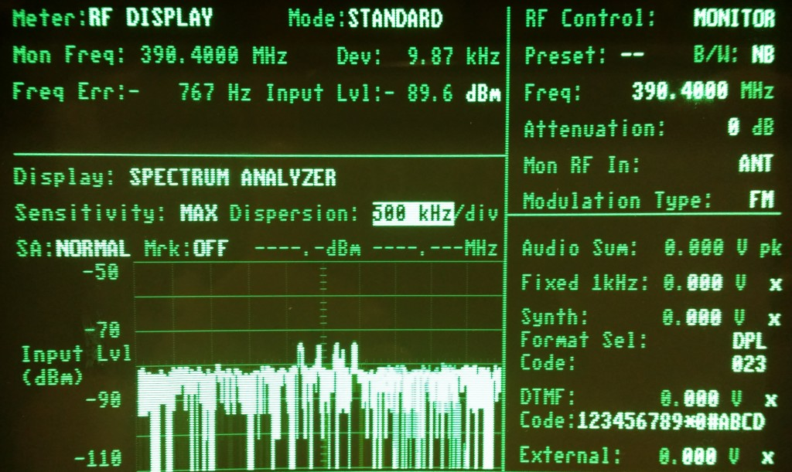

TETRA is present in over 117 countries across all continents.
This confirms that there is practically no alternative to TETRA in meeting the communication needs of users in the field of security.
Traditional analogue systems relied on a single frequency serving one user group. This limited overall system capacity and efficiency.
TETRA introduces Time Division Multiplexing (TDM), enabling four independent communication channels within a single carrier frequency.

Instead of having each user operating in its own limited network, TETRA enables the development of large national systems where infrastructure is shared by multiple professional users.
Such implementation exists in Montenegro, where different services operate within their own user groups while sharing the same national communication infrastructure.
Each agency operates normally within its own communication group.
When required, dispatcher connects several groups into one common group.
Allows police, army, emergency and rescue units to work together efficiently.
Designed to remain operational during large-scale incidents when commercial networks may fail.
Enables police, military, emergency and rescue units to communicate within shared national infrastructure.
Maximizes radio spectrum capacity through structured channel management.
Built for mission-critical environments where communication downtime is unacceptable.
Ensures protected exchange of operational and sensitive information.
Supports expansion from local deployments to large nationwide systems.
Unlike analogue systems that historically provided low levels of information protection, TETRA ensures maximum data protection.
The system offers high-quality security features with selectable encryption methods for voice, data, signalling and user identity.
Secure real-time voice communication between users.
Protection of transmitted operational and mission-critical data.
Encrypted signalling to prevent interception or manipulation.
Secure authentication and identity confidentiality.
| Usage Category | Frequency Band |
|---|---|
| Public Security Units | 380 – 400 MHz |
| Commercial Use | 410 – 430 MHz & 450÷470 MHz |
| Other Potential Bands | 870 – 876 MHz & 915 – 921 MHz |

Image of TETRA base station MTS 4 spectrum recorded using a spectrum analyzer.
Given the increasing security challenges in the modern world, the communication needs of police, military, emergency response, fire fighting and rescue units exceed the possibilities offered by conventional analogue radio networks.
TETRA provides a secure, reliable and mission-critical communication platform designed to support large national infrastructures and ensure uninterrupted coordination when it matters most.